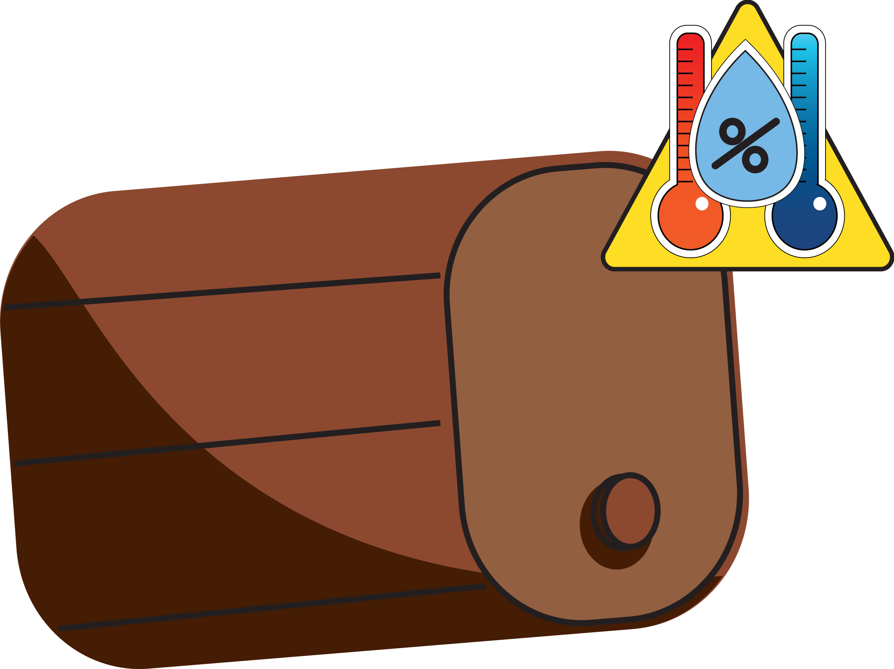
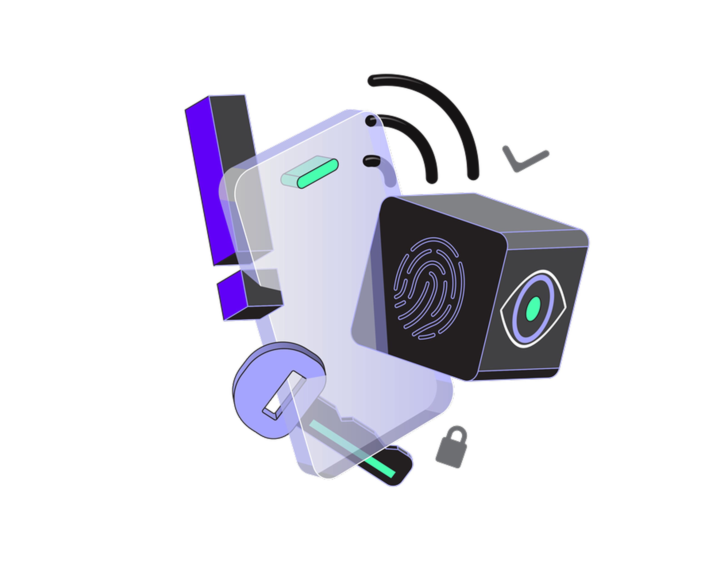

É divulgado que a temperatura e umidade é um
fator muito importante no processo de
maturação de whiskey, o descontrole pode gerar
uma alta taxa de Angel Share, mudanças no
sabor do produto final, o que pode acarretar na
perda de milhares de litros por ano.

Entre em contato conosco para um
atendimento personalizado voltado para as
suas necessidades, determinando as
quantidades de sensores e níveis de acessos.
Realizamos monitoramento do seu ambiente de
maturação 24h por dia, coletando dados de
temperatura e umidade a fim de te auxiliar na
tomada de decisão

A partir dos dados coletados realizaremos
analise detalhadas do seu ambiente com o
intuito de gerar conhecimento e insights para o
produtor